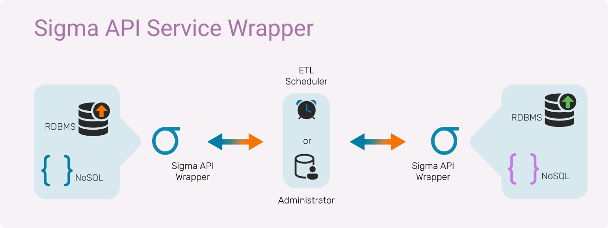

Achieve efficient database integration and transfer across a variety of platforms
Managed and Automated Data Synchronization
KASH Tech operates a seamless system for the integration of database records from varied data sources. With Sigma API, we provide the ability to both manually and automatically synchronize data stores across platform operations. The key features of this system are:
-
Agnostic to platform
-
Ability to scale horizontally for efficient load-handling
-
Live tracking and centralized monitoring of scheduled data transfers via admin GUI
-
Configuration flexibility of data transfer operations
-
Broadcast changes in the central data store at will with Instant Notification

Sigma API Service Suite comes with an API Service wrapper than can operate on any RDBMS/NoSQL data store. It acts as a WebService wrapper for any given tables/views/documents in the data store, based on configuration. Supports CRUD operations on a given hierarchy of tables and many such configurations. Data sets can be deployed on Sigma instance wrapping a given Data Store.
It also ships with a time-based scheduler service where the administrator can configure the source and destination tables/documents where the data has to be read or written - all based on configuration.
Get in touch to upgrade your data reporting systems.